złotówa
A private, offline expense tracker for your desktop.
1 Cześć!
Jeśli czytasz tę stronę to znaczy, że przynajmniej chcesz sprawdzić jak działa aplikacja złotówa. Oznaczać to może kilka rzeczy, ale przede wszystkim zdaje się że lubisz liczyć pieniądze. Mój Tata powiedziałby, że jesteś złotówą.
Jeśli chcesz dowiedzieć się więcej o tym jaki jest kontekst tej aplikacji, jakie problemy rozwiązuje, jakie są argumenty za designem i dla kogo jest ta aplikacja to zapraszam Cię na artykuł LINK. Tutaj skupię się na zaprezentowaniu działania apki. Miłego czytania
Postaram się wplatać jakieś żarty żeby nie było nudno ok.
2 Unboxing
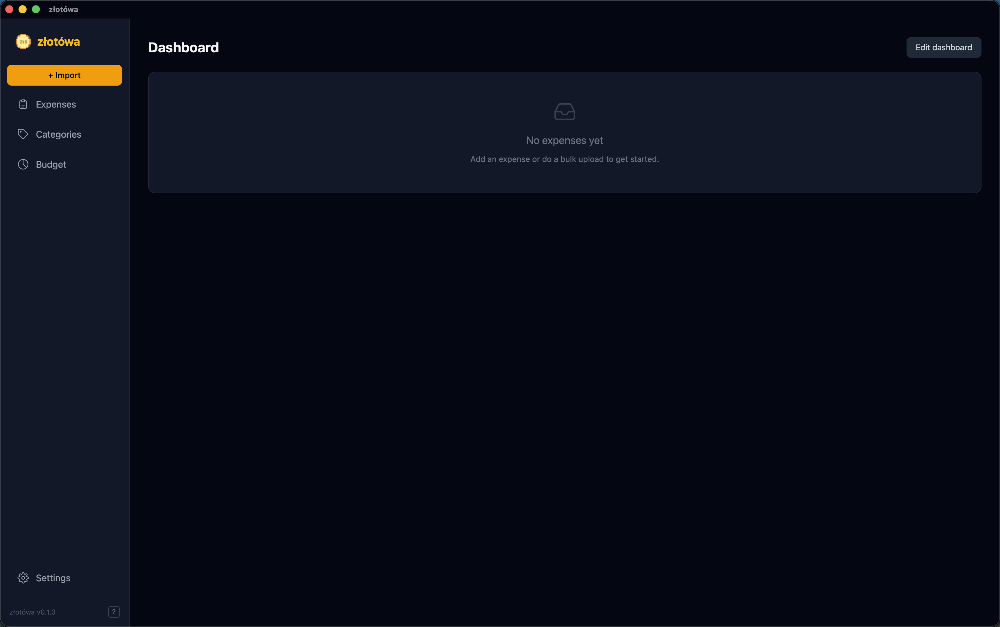
Jeśli programista tworzący tą aplikację nie jest dzbanem i nie popełnił jakichś błędów, to po otwarciu powinieneś zobaczyć coś takiego jak na obrazku wyżej. Po lewej stronie jest pasek z zakładkami, a w nim (od góry):
- Napis złotówa
- Żółty guzik z napisem
+ Import - Expenses
- Categories
- Budget
- Settings
W kolejnych sekcjach opiszę sposób pracy z aplikacją, a przy okazji wyjaśnię o co kaman z tymi wszystkimi tabami.
3 Pokaż kotku co masz w środku
Aplikacja wygląda nudno i pusto, bo nie poznała na co wydajesz pieniądze. Zacznijmy od zaimportowania wydatków.
Po zrobieniu pobieżnego riserczu wśród moich znajomych ustaliłem, że każdy bank oferuje możliwość wyeksportowania wydatków do pliku CSV. Mój główny bank to Santander, więc żeby wyeksportować wszystkie wydatki należy wejść w zakładkę Historia, a następnie nieco ponad listą wydatków nacisnąć na przycisk Pobierz listę transakcji CSV.
Add Manually, której guzik znajduje się w panelu Expenses, ale o tym później.
Oto moje wydatki, które wyeksportowałem z banku:
11-03-2026,11-03-2026,DOP. MC X PŁATNOŚĆ KARTĄ 11.30 PLN ZABKA Z7610 K.1 WROCLAW,,,"-11,30","2137,00",17,
10-03-2026,10-03-2026,DOP. MC X PŁATNOŚĆ KARTĄ 14.40 PLN KROWKA BAR TECZOWA Wroclaw,,,"-14,40","2137,00",18,
09-03-2026,09-03-2026,DOP. MC X PŁATNOŚĆ KARTĄ 30.93 PLN LIDL SWOJCZYCKA Wroclaw,,,"-30,93","2137,00",19,
08-03-2026,08-03-2026,DOP. MC X PŁATNOŚĆ KARTĄ 23.17 PLN PIEKARNIA HERT WROCL 6 Wroclaw,,,"-23,17","2137,00",20,
07-03-2026,07-03-2026,DOP. MC X PŁATNOŚĆ KARTĄ 5.00 PLN EVEND SA PASAZ GRUNWAL WROCLAW,,,"-5,00","2137,00",21,
06-03-2026,06-03-2026,DOP. MC X PŁATNOŚĆ KARTĄ 14.98 PLN PL KFC WROCLAW PASAZ G Wroclaw,,,"-14,98","2137,00",22,
05-03-2026,05-03-2026,PRZEDTERMINOWY WYKUP OBLIGACJI,,,"69,69","69,69",27,
04-03-2026,04-03-2026,DOP. MC X PŁATNOŚĆ KARTĄ 8.99 PLN GOOGLE *Google One DUBLIN 2,,,"-8,99","2137,00",28,
03-03-2026,03-03-2026,DOP. MC X PŁATNOŚĆ KARTĄ 70.00 PLN MANDARIN HOUSE WROCLAW,,,"-70,00","2137,00,29,
02-03-2026,02-03-2026,DOP. MC X PŁATNOŚĆ KARTĄ 7.00 PLN KBU SP Z O O SSPP WROC KRAKOW,,,"-7,00","2137,00",30,Patrząc pobieżnie na wyeksportowane wydatki można zauważyć, że każdy wiersz to 1 wydatek. W każdym wierszu znajduje się data wydatku, jego tytuł, ilość i saldo. Te dane składają się na kolumny w pliku CSV.
4 Importowanie wydatków
Po naciśnięciu złotego guzika + Import są dwie opcje:
- Wskazujesz ścieżkę do pliku, w którym są twoje wydatki w formacie CSV
- Kopiujesz wydatki z pliku i wklejasz ręcznie do pola po lewej stronie
Chodźmy ścieżką numer dwa.
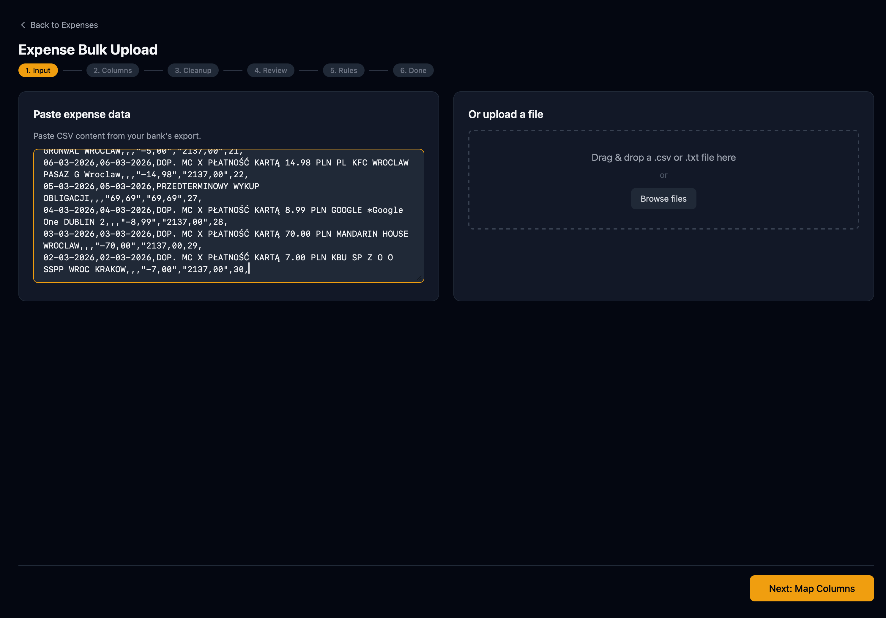
5 Oznaczenie kolumn
Tak jak pisałem wyżej: w wyeksportowanym pliku CSV można zauważyć konkretne typy informacji. Są to między innymi data, tytuł wydatku oraz ilość siana, która została wydana. Trzeba dać znać aplikacji, które informacje są datą, tytułem i ilością pieniędzy tak, żeby ta mogła zrobić odpowiedni użytek z tych informacji i zaprezentować je w atrakcyjny sposób.
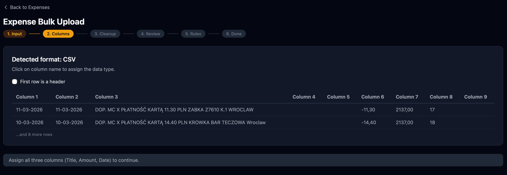
Kolumnę z informacją oznacza się poprzez kliknięcie na jej nazwę i wskazanie jaka informacja się w niej znajduje.
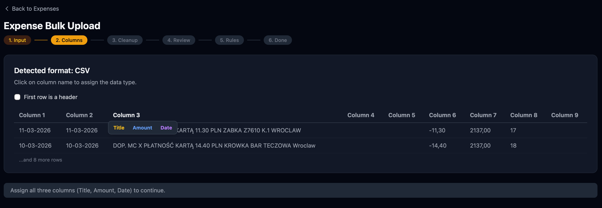
Zanim przejdziemy dalej, musimy wskazać gdzie znajduje się tytuł, data i ilość pieniążków.
date;date;title;x;y;z;amount;...
11-03-2026,11-03-2026,DOP. MC X PŁATNOŚĆ KARTĄ 11.30 PLN ZABKA Z7610 K.1 WROCLAW,,,"-11,30","2137,00",17,First row is a header
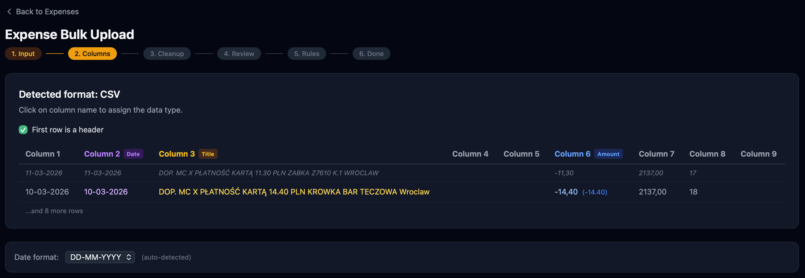
Dobrze oznaczony ekran powinien prezentować się mniej więcej tak:
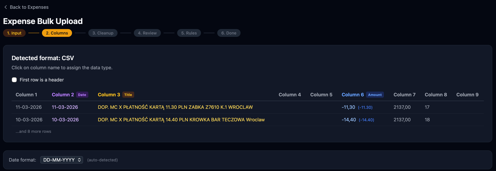
6 Cleanup
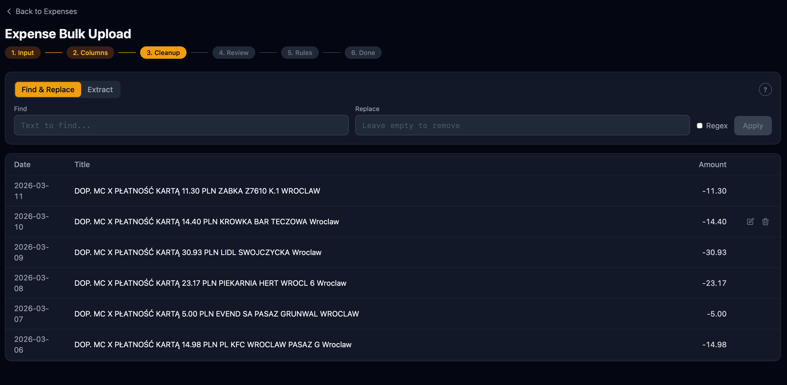
Trzecim krokiem jest cleanup. Ten krok jest zupełnie opcjonalny i można go skipnąć.
Jeśli jednak chcesz zrobić porządek z listą wydatków, to polecam skorzystać z Find & Replace albo Extract, których opis działania wyświetla się po naciśnięciu znaku zapytania znajdującego się w prawym górnym rogu ekranu.
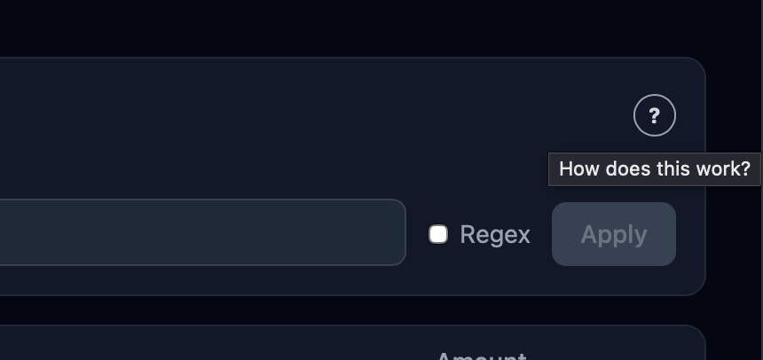
Dodatkowo możesz usunąć wybrane pozycje albo zmienić tytuł ręcznie korzystając z guzików pojawiających się na prawym końcu każdego wiersza
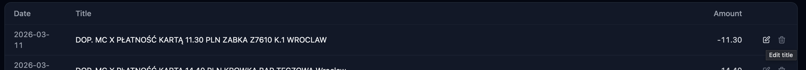
Find & Replace albo Extract aplikacja zapamięta co zostało podmienione i w jaki sposób. W przyszłości będziesz mógł / mogła kliknąć na użyte wcześniej reguły żeby automatycznie nanieść je na listę wydatków.
7 Review
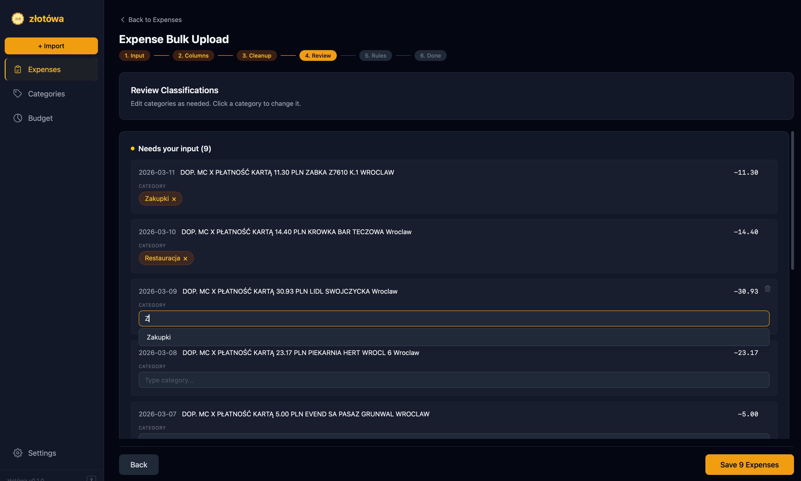
Ostatnim obowiązkowym krokiem jest oznaczenie wydatków. Pomysł jest taki, że każdy wydatek wpada w jakąś kategorię. Klasyfikacja wydatków jest robiona po to, żeby można było zaprezentować wydatki w atrakcyjny sposób na ekranie głównym aplikacji. Wiersze, które zawierały pozycje z dodatnim znakiem zaklasyfikowane zostały jako przychód i zostały wyłączone z dalszego procesowania w aplikacji
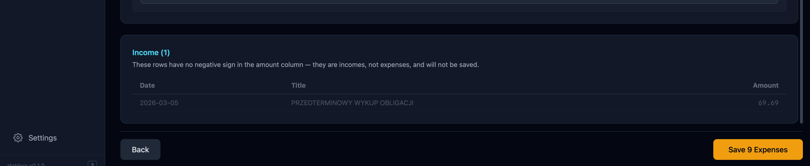
Settings > LLMs) to wydatki zostaną zaklasyfikowane przez AI. Twoim zadaniem pozostanie sprawdzenie jak dobrze LLM sobie z tym poradził i poprawienie go w pewnych miejscach jeśli to konieczne.
8 Rules
Ostatnim krokiem całego flow, który jest w pełni opcjonalny to sprawdzenie zasad stworzonych przez złotówę.
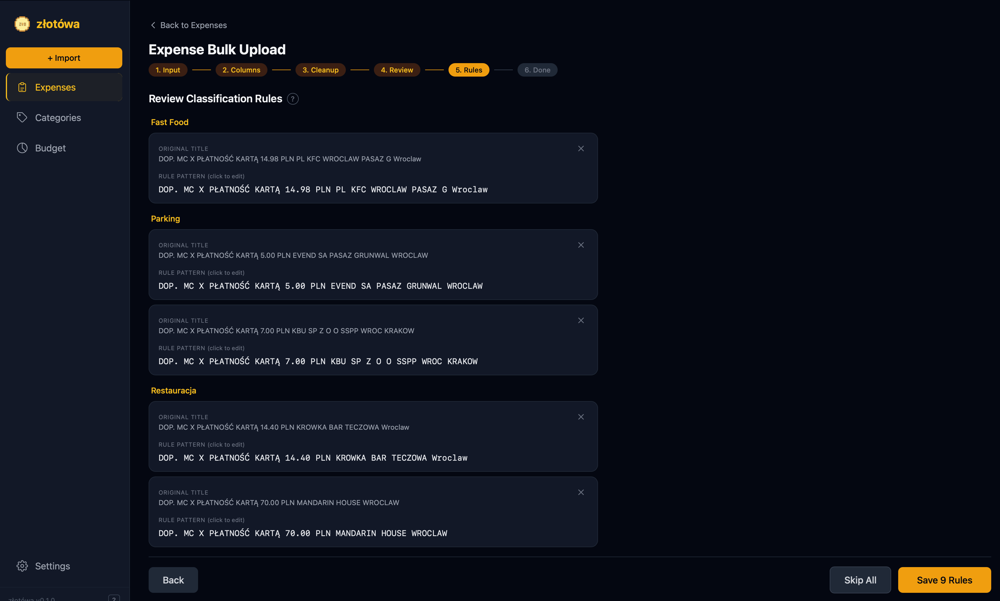
Aplikacja została stworzona z myślą, żeby możliwie jak najwięcej operacji przy importowaniu wydatków było wykonywane automatycznie. Krok Rules prezentuje zasady, którymi będzie kierować się złotówa w przyszłości w oznaczaniu wydatków.
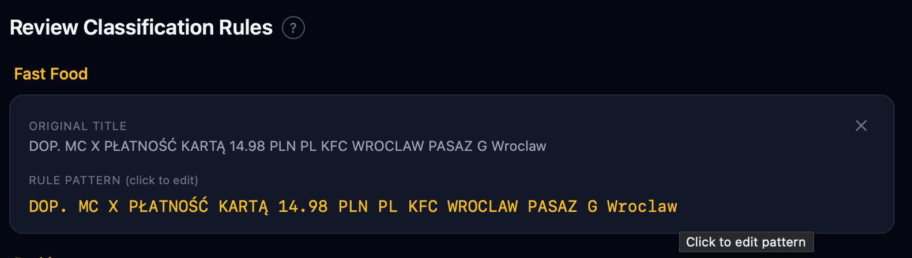
Powyższy kafelek należy rozumieć tak:
Na podstawie tytułu DOP. MC X PŁATNOŚĆ KARTĄ 14.98 PLN PL KFC WROCLAW PASAZ G Wroclaw (oznaczone jako Original title) została stworzona następująca zasada:
Za każdym razem, kiedy widzę <RULE_PATTERN> oznaczam pozycję jako <KATEGORIA>
W tym przypadku, oznacza to, że jeśli kiedyś jeszcze pojawi się w wydatkach
DOP. MC X PŁATNOŚĆ KARTĄ 14.98 PLN PL KFC WROCLAW PASAZ G Wroclaw
to automatycznie zostanie to zaklasyfikowane jako kategoria Fast Food.
Jest mała szansa, że kiedyś w KFC kupisz coś za 14.98, więc powyższą zasadę można odrobinę uprościć:
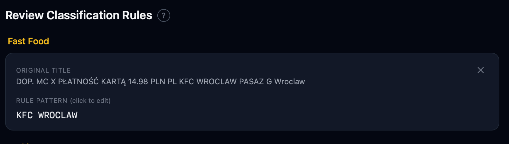
W tym momencie, powyższą regułę można przetłumaczyć następująco:
Zawsze, kiedy zobaczysz w tytule KFC WROCLAW to sklasyfikuj wydatek jako Fast Food.
Analogicznie można uprościć każdą z zasad w podobny sposób, dzięki czemu będą bardziej wszechstronne.
Po opracowaniu zasad (albo pominięciu tego kroku) wydatki zostały zaimportowane do aplikacji. Teraz możemy popatrzeć na wykresy
9 Wykresy
Po zaimportowaniu wydatków możemy wrócić do ekranu głównego poprzez naciśnięcie logo aplikacji złotówa. Naszym oczom domyślnie powinno pokazać się coś takiego
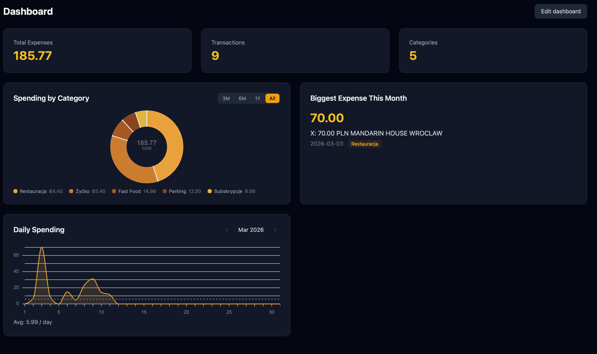
Dashboard jest do pewnego stopnia otwarty na modyfikacje pod preferencje użytkownika. Widgety z wykresami można dodawać, usuwać i zmieniać ich położenie. W tym celu trzeba odpalić guzik Edit Dashboard. Przy każdym kafelku pojawiają się strzałki umożliwiające przesunięcie widgetu na inną pozycję. Można też chwycić widget i przenieść w dowolne miejsce. Na samej górze pojawia się też przycisk + Add Widget, po naciśnięciu którego pojawia
się lista dostępnych widgetów / wykresów w aplikacji. Każdy z tych wykresów tłumaczy się sam, jedyny który wymaga jakiegoś intro jest Keyword Tracker.
Po wybraniu Keyword Tracker z dostępnych widgetów, aplikacja poprosi użytkownika o wprowadzenie słów / słowa kluczowego:
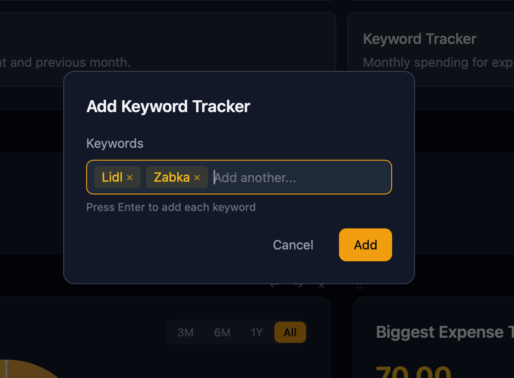
Każde ze słów kluczowych trzeba potwierdzić enterem.
Keyword Tracker stworzy wykres, na którego osi X będą wszystkie wydatki posiadające słowa wprowadzone w poprzednim ekranie (w tym przypadku będzie to LIDL i ŻABKA). Oś Y pokazuje ilość pieniędzy która poszła na te wydatki. Każdy słupek na tym wykresie oznacza 1 miesiąc.
Inne ciekawe (w mojej ocenie) wykresy to Daily Spending i Day of the Week.
Użytkownik aplikacji decyduje sam które wykresy chce mieć na ekranie głównym. Keyword Tracker może wystąpić dowolną ilość razy, za każdym razem pokazując wykres innych słów.
10 Wydatki
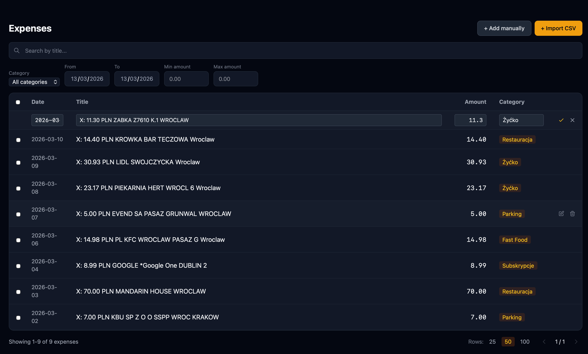
Zakładka Expenses daje możliwość przeglądania wszystkich wydatków. Można filtrować, zmieniać nazwy, usuwać pozycje.
W prawym górnym rogu jest przycisk + Add Manually, który daje możliwość wprowadzenia wydatków pojedynczo, ale takie rozwiązanie jest dla dziadersów. Jeśli chcesz dodawać wydatki pojedynczo to lepiej zainstaluj sobie excela, pozdro.
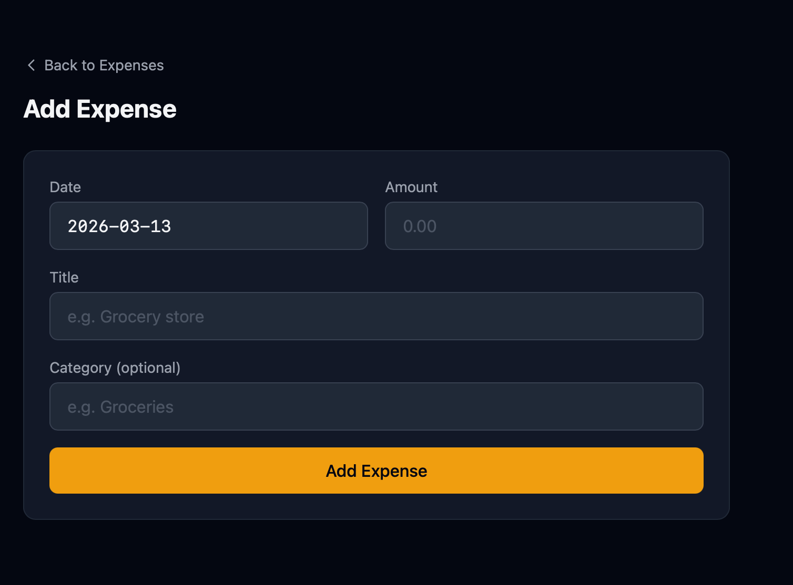
11 Kategorie
Ekran kategorii jest raczej czytelny. Kategorie można ze sobą łączyć, można zmieniać ich nazwy albo je usuwać. W ostatnim przypadku zawsze trzeba dodać kategorię, która zostanie użyta jako zamiennik.
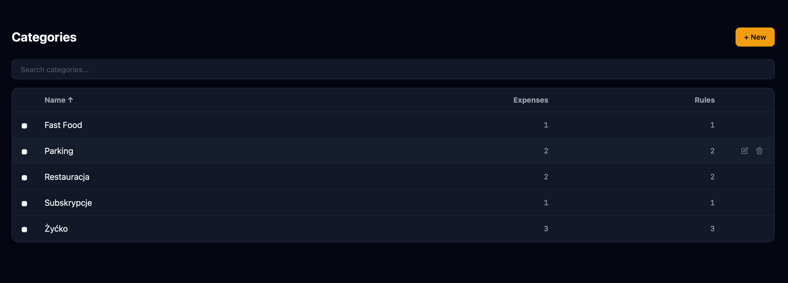
12 Planowanie Budżetu
Sekcja w trakcie przygotowania.